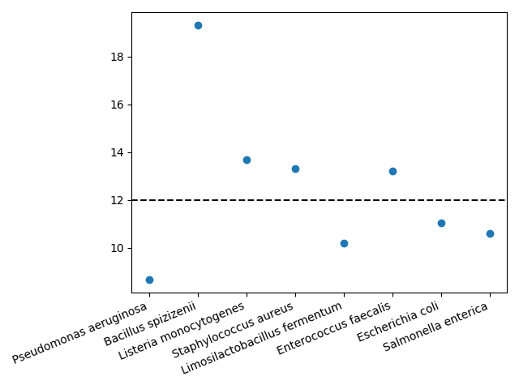

Analysing data¶
Overview¶
Once data and metadata have been ingested into the Onyx database, you
can query it using the Onyx client, which provides a command line interface (CLI)
and Python API. This short example
demonstrates a few principal functions. More are described in the
onyx-client documentation.
This guide also assumes that you're using a Notebook Server on CLIMB, so that once installed, the Onyx client will automatically be configured.
Onyx client basics¶
First, let's install the Onyx client, which is available through the
conda-forge package
climb-onyx-client and can thus be installed
with conda. As advised in the CLIMB docs on installing
software,
you should install the client in a new Conda environment.
I'll name my environment onyx and install climb-onyx-client, as well as ipykernel (so that the client is available in my Jupyter Notebooks).
mscape listed.
Querying data¶
As an example task, we'll see if we can find any sequencing data performed for ZymoBIOMICS sources. These are designed with a particular specification of DNA from eight bacteria and two yeasts. We can use these to see if our protocol correctly recovers the DNA fractions. I.e. if our protocol is biased.
From the command line, the main route to querying Onyx is via the filter command.
On its own, this queries the database with no filters. The command
(onyx) jovyan:~$ onyx fields mscape
...
├────────────────────────────────┼──────────┼───────────────────┼──────────────────────────────────────────────────────────────────────────────┼─────────────────────────────────────────────────────────────────────────────┤
│ extraction_enrichment_protocol │ optional │ text │ Details of nucleic acid extraction and optional enrichment steps. │ │
├────────────────────────────────┼──────────┼───────────────────┼──────────────────────────────────────────────────────────────────────────────┼─────────────────────────────────────────────────────────────────────────────┤
...
zymo (case-insensitive) in this field.
That should return JSON data for a few entries. You may wish to format the
data as CSV or TSV with --format csv or --format tsv, respectively.
Inspecting some pipeline output on the command line¶
When data is ingested into Onyx, a taxonomic classification is automatically run.
The last part of the JSON data is usually some of this, in JSON format.
The complete reports can be found in the S3 buckets given in the
'taxon_report' field. You can find this in the output you've already produced
or modify the filter command to only request them using the --include flag. e.g.
(onyx) jovyan:~$ onyx filter mscape --field extraction_enrichment_protocol.icontains=zymo --include=taxon_reports
[
{
"taxon_reports": "s3://mscape-published-taxon-reports/C-FDE50853AD/"
},
{
"taxon_reports": "s3://mscape-published-taxon-reports/C-04F4495068/"
}
]
--include flag e.g.
(onyx) jovyan:~$ onyx filter mscape --field extraction_enrichment_protocol.icontains=zymo --include climb_id,taxon_reports
[
{
"climb_id": "C-FDE50853AD",
"taxon_reports": "s3://mscape-published-taxon-reports/C-FDE50853AD/"
},
{
"climb_id": "C-04F4495068",
"taxon_reports": "s3://mscape-published-taxon-reports/C-04F4495068/"
}
]
--exclude
flag in the same way.
Either way, you now have the location of the taxonomy reports. Let's have a look
with s3cmd.
(onyx) jovyan:~$ s3cmd ls s3://mscape-published-taxon-reports/C-FDE50853AD/
2023-11-10 12:56 146K s3://mscape-published-taxon-reports/C-FDE50853AD/PlusPF.kraken.json
2023-11-10 12:56 2G s3://mscape-published-taxon-reports/C-FDE50853AD/PlusPF.kraken_assignments.tsv
2023-11-10 12:56 193K s3://mscape-published-taxon-reports/C-FDE50853AD/PlusPF.kraken_report.txt
s3cmd:
(onyx) jovyan:~$ s3cmd get s3://mscape-published-taxon-reports/C-FDE50853AD/PlusPF.kraken_report.txt
download: 's3://mscape-published-taxon-reports/C-FDE50853AD/PlusPF.kraken_report.txt' -> './PlusPF.kraken_report.txt' [1 of 1]
197750 of 197750 100% in 0s 3.79 MB/s done
If you've never seen one of these reports before, it's worth having a
quick look with a tool like less or by opening it using the
JupyterLab file browser. For reference, it's worth showing the header
(onyx) jovyan:~$ head -n 1 PlusPF.kraken_report.txt
% of Seqs Clades Taxonomies Rank Taxonomy ID Scientific Name
(onyx) jovyan:~$ grep "Bacillus subtilis" PlusPF.kraken_report.txt
20.30 435278 1452 G1 653685 Bacillus subtilis group
0.12 2624 1952 S 1423 Bacillus subtilis
0.03 565 242 S1 135461 Bacillus subtilis subsp. subtilis
0.01 108 108 S2 1404258 Bacillus subtilis subsp. subtilis str. OH 131.1
...
An important detail here is that the fraction reported in this output is not calculated in the same way as what's used in the reference values (12% for bacteria; 2% for yeasts). Let's make a fairer comparison using the JSON taxonomic data.
Working with database output in Python¶
To fairly compare the taxonomic data with the reference values in the Zymo community, we need to know the proportions of gDNA, so we need to compute the number of base pairs that were assigned to each taxon. Let's make this comparison in Python using the Onyx client's Python API.
Let's first run the same query for the Zymo data. We'll follow the examples in the Onyx documentation and run the query in a context manager.
import os
from onyx import OnyxConfig, OnyxEnv, OnyxClient
config = OnyxConfig(
domain=os.environ[OnyxEnv.DOMAIN],
token=os.environ[OnyxEnv.TOKEN],
)
with OnyxClient(config) as client:
records = list(client.filter(
"mscape",
fields={
"extraction_enrichment_protocol__icontains": "zymo",
},
))
filter call in a list because otherwise
we get a generator.
If you want to inspect the data, it's a bit easier to read if formatted with
indentation, which can be done using the standard json.dumps function:
'taxa_files' key gives us a list of dictionaries
that each has a number of reads and a mean length, the product of
which is the total number of base pairs that were read for that
taxon. A simple first step is to convert the taxonomic data (for the first record)
into a Pandas DataFrame with
We also need to drop a few lower-level taxa that are already
accounted for in higher ones. e.g. the reads for Bacillus spizizenii TU-B-10 are
among the reads counted for Bacillus spizizenii. A quick way of doing this
is by selecting the rows that have only two words in their names.
Now, let's add columns for the total number of base pairs associated with
each taxon and what proportion that is of the total.
Finally, let's make a rough plot with a black dashed line at 12%.
import matplotlib.pyplot as plt
plt.plot(df['human_readable'], df['proportion']*100, 'o')
plt.axhline(12, c='k', ls='--');
plt.xticks(rotation=22.5, ha='right');

There are some clear discrepancies—Pseudomonas aeruginosa is underreported and Bacillus spizizenii is overreported—but this matches results by e.g. Nicholls et al. (2019).
This short example is intended as a basic demonstration of what's possible in CLIMB-TRE. We're always interested to hear more examples of research questions that CLIMB-TRE can answer, so let us know if you have an example that could be included as a guide for others.
Last modified 2024-03-25 15:29:15+00:00 (ac20a21)